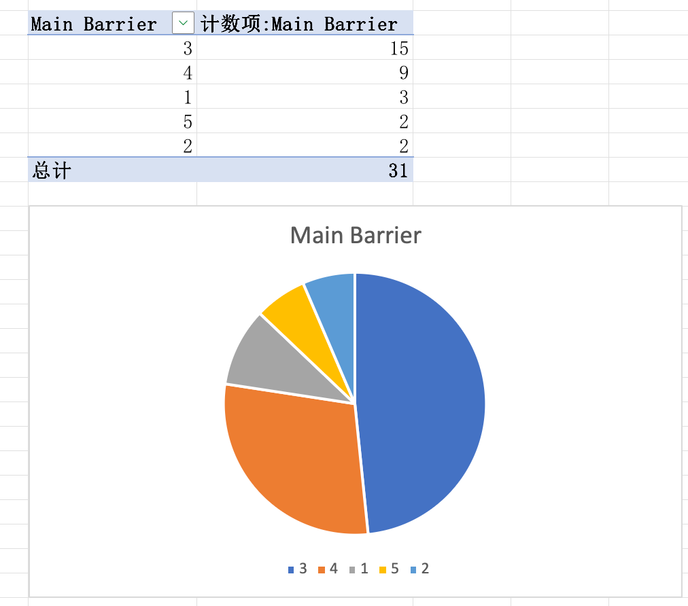

Barnsley
Joined the AND Festival in Barnsley—an incredible showcase of digital interactive art. A memorable day filled with creative media, thoughtful installations, and visual inspiration.
Hi, I'm Eliora. A Product and Interaction Design graduate, now exploring Digital Media Technology in Leeds. This is my digital space to record my UK journey, travel photography, and academic coursework.
Joined the AND Festival in Barnsley—an incredible showcase of digital interactive art. A memorable day filled with creative media, thoughtful installations, and visual inspiration.
A day at the place many people associate with Mr Darcy and Pemberley. A few photos, beautiful scenery, and impressions from my visit.
A hands-on digital media workshop project exploring web structure deconstruction, sitemap configuration, and automated data harvesting.

Successfully configured selectors using the Web Scraper browser extension to harvest structured content from the target web page, exported as a clean CSV dataset.
A space to document my learning journey, track my weekly progress, and reflect on course feedback.
This week introduced us to digital practices and the relationship between technology and society. Instead of viewing technology in isolation, I learned to think critically about how digital media both shapes and is shaped by our social context. It’s a great starting point for exploring digital media technology through both theory and practical work this semester.
This week focused on website structures, the basics of HTML and CSS, and different models of web publishing. Coming from a background in App UI design, I initially found creating a website through CampusPress and GitHub to be an unfamiliar and challenging experience. Although I had some previous experience with digital interface design, I realised that building a website involved more than simply designing its visual appearance. It also required an understanding of the underlying technical structures and processes that make websites function and become accessible online.
After experimenting with both platforms, I ultimately decided to use GitHub to build my portfolio. I plan to continue developing my skills by combining AI tools with classroom tutorials. Through this experience, I also became more aware of the importance of paying attention to details in visual design, textual organisation and overall website structure. More importantly, it challenged my previous understanding of the Internet as simply an open space for accessing and sharing information. I began to recognise that digital environments are constructed through coding, design decisions and publishing systems, all of which influence how information is organised and presented. This experience also made me reflect on Gillespie's (2013) argument that algorithms should not be understood as entirely neutral technical processes. He explains that decisions about how information is selected, categorised and presented involve human and institutional choices. Although my experience of creating a website mainly focused on its technical and visual aspects, it helped me appreciate that the design of digital spaces is closely connected to how people interact with information. For example, decisions about website layout, navigation and content organisation can influence what users notice and how they engage with the information available. This connects with Gillespie's broader argument that technological systems do not simply deliver information objectively, but also shape how information becomes visible and relevant to users. Overall, this week encouraged me to look beyond the visual interface of digital platforms and pay more attention to the structures and decisions behind them. It also made me consider how much influence website creators and platform designers have over users' online experiences. I would like to explore further whether users are always aware of how these design and algorithmic decisions shape the information they encounter, and to what extent they can exercise control over their own online experiences.This week, we explored the basics of web scraping and learned how to transform unstructured web content into structured, analysable data (in CSV format) using tools such as browser extensions. During the practical workshop, I used the Web Scraper extension to experiment with collecting information from the BBC website. I then organised the extracted information into a dataset and successfully incorporated the data and visualisations into my personal portfolio. The video by Chapple (2022) also helped me understand the basic process of web scraping and how information can be extracted from websites for further analysis. Through this practical experience, I realised that web scraping is not simply about collecting information, but also about transforming online content into data that can be organised, compared and interpreted.
One of the most important things I learned from scraping the BBC website was that online information is not automatically available in a form that can be directly analysed. It needs to be extracted, structured and organised before meaningful patterns can be identified. This made me think more critically about how digital data is produced and collected. As discussed by Venturini and Rogers (2025), web scraping involves working with both documents and interfaces, which means that the way information is presented online can influence how researchers access and collect it. However, I also realised that web scraping has several technical and methodological limitations. Writing custom Python scripts for web scraping can be quite challenging and time-consuming, as it involves dealing with different libraries, coding techniques and environmental setups. Therefore, I decided to focus on developing a basic understanding of Python-based scraping rather than exploring it in depth at this stage. By comparison, using existing visual tools was more efficient and intuitive for me. Nevertheless, I began to realise that the convenience of web scraping tools does not necessarily guarantee the completeness, accuracy or representativeness of the data collected. The results may be limited by the BBC website's structure, the information available on the pages I selected and the specific criteria used to collect the data. This made me question whether the dataset I collected could fully represent the wider range of information published by the BBC. Another important aspect of this week's learning was the ethical dimension of web scraping. Although I did not necessarily encounter a direct ethical problem during the practical task, I became more aware that publicly accessible information is not automatically free from ethical considerations. Collecting and using online data may raise concerns about users' privacy, consent and how their information is stored or shared. For example, even when information is publicly visible on a website such as the BBC, researchers should still consider whether it is appropriate to collect, analyse or republish it. This is particularly relevant when publishing research findings or datasets on a personal portfolio website that can be accessed by others. Venturini and Rogers (2025) encouraged me to consider web scraping not only as a technical method, but also as a research practice with legal and ethical responsibilities. Overall, this week changed my understanding of online data collection. I previously thought of web scraping mainly as a convenient way to gather large amounts of information, but I now recognise that the process involves important decisions about what data is collected, how it is structured and what conclusions can be drawn from it. I would also like to explore further how researchers can balance the efficiency of automated data collection with the need to protect individual privacy. More broadly, when online information is publicly accessible, where should we draw the boundary between what we can collect and what we should collect?This week's workshop changed my understanding of data collection. Previously, I tended to see data as information that could be gathered, organised and analysed using digital tools. However, the workshop helped me recognise that data is not simply discovered in a neutral form. The decisions we make about what to collect, how to classify it and which information to exclude can shape the conclusions of our research.
One of the most important things I learned from the workshop was that creating a dataset involves ethical and interpretative decisions, rather than just technical processes. Our group used Communalytic to collect and analyse Reddit discussions relating to students' experiences of generative AI, academic misconduct and exam stress. During this process, we experienced a sense of intrusion when reading posts containing personal concerns, such as anxiety about AI cheating and fear of academic misconduct. Although these discussions were publicly accessible, I realised that users might have shared their experiences expecting support from an online community, rather than anticipating that their posts would become research data. This raised an ethical question about the difference between publicly available information and informed consent. To reduce privacy risks, our group removed user IDs, exact timestamps and direct URLs from the collected data. We also used a five-variable coding dictionary to convert qualitative text into numerical values. This allowed us to organise individual posts into broader patterns without retaining unnecessary identifying details. However, I also realised that removing personal identifiers does not automatically resolve every ethical concern, particularly when the original discussions involve sensitive experiences. The main challenges of imagining, collecting and classifying data were deciding which experiences should be represented, how to translate complex narratives into fixed categories, and how to avoid losing important context during that process. For example, two Reddit users might both express anxiety about AI and academic integrity, but their concerns could arise from very different personal circumstances. Assigning numerical codes makes comparison easier, yet it can also make these differences less visible. I initially regarded numerical data as more objective, but the workshop made me question this assumption. The numbers may appear neutral, while the choices behind their creation remain subjective. This experience closely relates to D'Ignazio and Klein's (2020) discussion of binaries and hierarchies in Data Feminism. They argue that classification systems are connected to existing structures of power and can reinforce inequalities when complex identities or experiences are forced into restrictive categories. Hierarchies and binaries can emerge in data collection when researchers decide which categories are considered normal, which experiences are treated as exceptions, and whose perspectives are excluded altogether. Reflecting on our Reddit dataset, I recognised that our coding system was not simply a technical tool. It also reflected our own interpretations of students' experiences. Even when categories are designed with good intentions, they may fail to capture uncertainty, contradiction or perspectives that do not fit neatly into the available options. Crawford (2021) similarly challenges the idea that data exists independently of social and political structures. Her discussion of data as a form of classification and world-making helped me understand that collecting information also involves defining how people and their experiences become visible to researchers. Our workshop experience connected with both readings because it demonstrated how decisions about data collection and classification can influence what becomes measurable, what remains invisible and how particular groups are represented. This made me more aware of the responsibility researchers have when transforming human experiences into datasets. The readings also encouraged me to reflect on my everyday use of social media platforms. When using social media, I understand that certain information, such as my interactions, searches and viewing activity, may be collected to support platform functions and personalise content. However, I do not always know precisely how this information is processed, combined or used beyond the immediate recommendations I see. Although I accept some data collection when using digital services, I am not necessarily fully informed about how my behaviour is interpreted or how the resulting profiles shape my online experience. Personalised recommendations can make platforms more convenient, but they may also influence which perspectives I encounter and which content remains less visible. Overall, this week helped me move beyond thinking of data analysis as a process of extracting information and producing numerical results. I now understand that responsible data research requires attention to privacy, representation and the power involved in classification. In future projects, I want to consider not only whether data can be collected, but also whether collecting it is appropriate and how my methodological choices might affect the people represented. Two questions remain particularly important to me: When personal experiences are converted into numerical categories, how much meaning is lost in the process? And can publicly accessible social media data ever be considered ethically straightforward to use without the explicit consent of its original authors?This week's workshop built on our previous experience of collecting and classifying Reddit data using Communalytic. Our group used Microsoft Excel to visualise 31 records concerning the main barriers people experienced when using generative AI. We created a pie chart showing that concerns about policy violations and academic integrity were the most frequently identified barrier, accounting for 15 records (48.4%). This was followed by no clear barrier, with 9 records (29.0%). Fabricated references or AI hallucinations accounted for 3 records, while lack of depth and other barriers each accounted for 2.
During my undergraduate studies, I had already gained some experience with data visualisation. However, I mainly understood it as a design task involving the creation of attractive and creative charts. This workshop helped me realise that data visualisation is not simply about presenting numbers visually, but also about interpreting information, communicating findings and considering how audiences might understand them. One challenge we encountered was that our pie chart initially displayed only numerical category codes, such as 1, 2 and 3, without explaining their meanings. Although these codes were understandable to our group because we had created the coding dictionary, they were not meaningful to an unfamiliar audience. This made me recognise the importance of clear labels, contextual information and accessible design. The main challenge of visualising our data was finding a way to communicate the differences between categories without oversimplifying the experiences represented by those numbers. While the pie chart made the proportions relatively easy to identify, it did not explain the personal circumstances behind each response. Reflecting on the process from Week 4 to Week 5 also changed how I understood the relationship between data collection and its intended purpose. When collecting data for research, I focused on identifying relevant information and organising it into consistent categories; when preparing it for visualisation, I became more concerned with which patterns should be highlighted and how they might be interpreted by an audience. For example, the largest segment of our pie chart suggested that academic integrity was a significant concern within our dataset. However, presenting this result without explaining the limited sample or our classification decisions could encourage viewers to generalise it to a much wider student population. This connects with Feigenbaum and Alamalhodaei's (2020) discussion of visual data storytelling, particularly the importance of considering audiences and the messages communicated through visual design. I understand the ideological work of data visualisation as the way visual choices can shape what appears important, credible or representative, rather than simply displaying neutral facts. Decisions about categories, colours, chart types and labels can direct attention towards particular findings while making other aspects less visible. The workshop also encouraged me to reconsider the ethical issues raised during our Reddit data collection. Although our group removed identifying information, the process of translating personal experiences into numerical categories still involved interpretation. Drawing on D'Ignazio and Klein (2020), I began to understand how feminist approaches to data can challenge apparently neutral classification systems by asking whose perspectives are included, excluded or simplified. A feminist approach to visualisation could help us recognise bias by questioning whether our five categories adequately represented different experiences and by making the limitations of our dataset more transparent. Rather than treating the chart as a complete explanation, we should acknowledge the experiences and uncertainties that cannot easily be represented through numbers. I also explored The Pudding's interactive article Who Gets Shipped and Why? (Cai et al., 2024). I found its visual storytelling effective because readers could explore relationships within fanfiction data rather than simply receiving a fixed conclusion. However, it also made me consider whether emphasising popular relationships might leave less common ones with comparatively little attention. This reinforced my understanding that visualisations can both reveal patterns and influence which stories become visible. Overall, this workshop helped me move from seeing visualisation primarily as a creative design activity towards understanding it as a form of critical interpretation. In future projects, I would pay greater attention to explanatory labels, the limitations of small datasets and the perspectives that might be missing from a visual representation. Two questions remain for me: How can we make data visualisations accessible and engaging without losing the complexity of individual experiences? And when a chart appears objective, how can we encourage audiences to question the decisions behind it?
1. Data Collection and Manual Scraping
For this workshop, I chose Douyin (the Chinese counterpart of TikTok) as the social media platform for my investigation. I collected the latest 15 social media posts from 32 friends, giving me 480 posts in total. I used Sumpter's (2018) 13 categories to classify the posts and recorded the results in Excel.
2. Problems with the Categories
One of my biggest difficulties was deciding whether selfies should be classified as Lifestyle or whether they needed a separate category. I usually placed selfies under Lifestyle because they often represented someone's daily activities. However, a photo of someone having dinner with friends could also belong to Friends, while a photo focusing on an outfit might represent personal style or self-presentation.
3. How Life Stages and Jobs Affect Social Media Posts
Something I found interesting was that people's posts seemed to be connected to their current stage of life and their jobs.
4. How I Would Improve the Method
After completing the classification, I realised that the main problem was not necessarily the number of categories, but the difficulty of distinguishing between them.
5. What I Learned from Changing the Method
This activity made me realise that the way data is classified can directly influence the results of an analysis. If I changed the categories or coding rules, the numbers in my spreadsheet would also change.
6. Can 15 Posts Represent Someone's Identity?
I do not think that 15 social media posts can fully represent someone's identity, because people only choose to share certain aspects of their lives online.
For example, someone who frequently posts travel photos may appear to be mainly interested in travelling, but this does not tell us about their personality, relationships, concerns or other interests. Similarly, a beauty influencer who regularly shares product advertisements may be classified as highly interested in shopping, even though these posts are also part of their job.


This week's activities encouraged me to reflect more critically on how digital platforms collect and interpret our data, and how technological systems shape the way people are understood and judged. Revisiting Sumpter's experiment also helped me reconsider the limitations of my previous research methods and connect them with broader questions about artificial intelligence and human identity.
When exploring the platform's data inputs and outputs, I realised that social media platforms collect more than just the content we deliberately share. Our interactions and online activities can also contribute to the construction of user profiles. Although these profiles allow platforms to personalise advertisements and recommendations, it is not always easy to understand how the underlying decisions are made. I began to question whether these profiles genuinely reflect who we are or simply represent what platforms predict about us based on available data. Reflecting on my previous experiment, in which I classified 480 posts from 32 friends on Douyin, I noticed that people's online content appeared to be influenced by their life stages, occupations and personal circumstances. Lifestyle content was relatively common, but the frequency of particular categories did not necessarily reflect people's actual interests. The two main limitations I identified in Sumpter's method were the subjectivity of manual classification and the difficulty of assigning complex posts to a single category. If I repeated the experiment, I would develop clearer coding rules and ask some of my friends to evaluate their classification results. Their feedback could help me understand whether my interpretations were consistent with how they perceived themselves. The second part of the workshop introduced an interesting activity in which we became AI detection robots and attempted to distinguish between human-written and AI-generated academic texts. It was later revealed that all the excerpts came from previous students' academic work that had received a grade of 2:1 or above. This made me reconsider the relationship between academic writing quality and the characteristics commonly associated with AI-generated content. Through my experience of using large language models such as ChatGPT, I understand that these tools generate text based on patterns learned from training data. However, human academic writing also follows established conventions, including formal vocabulary, logical structures and coherent arguments. The workshop challenged my understanding of AI detection by making me question whether linguistic characteristics alone can reliably distinguish between human-written and AI-generated content. Although this classroom activity was not a direct evaluation of commercial AI detection software, it highlighted the difficulties of making judgements based on selected textual features. This experience reminded me of D'Ignazio and Klein's (2020) discussion of binaries and hierarchies in data classification. Dividing academic writing into two categories, human-written and AI-generated, may overlook the complexity of the writing process. For example, a student might independently develop their arguments while using AI to check grammatical accuracy, where such assistance is permitted. Crawford (2021) also emphasises that data classification is connected to structures of power. These readings helped me recognise that AI detection is not simply a technical issue, because classification decisions can have significant consequences for how students and their academic work are judged. I also began to reconsider what good academic practice means in the context of generative AI. As an international student, I recognise the potential value of digital tools in supporting language learning and understanding unfamiliar academic concepts. However, AI-generated information can contain inaccuracies and fabricated references. For me, responsible academic practice involves maintaining ownership of my ideas, verifying information independently, following assessment-specific AI policies and being transparent about AI assistance where required. The quality of academic work should not depend solely on how polished the final text appears, but also on the intellectual effort and critical thinking behind it. The short film We Were Here (Bhasin, 2026) also encouraged me to think about the relationship between humans and technology. Although its humorous approach made the subject accessible, I felt that it raised a serious question about human value in a society where machines and AI are increasingly capable of performing tasks previously undertaken by people. I interpret the idea of the 'shaky line' as a reminder that the boundary between humans and technology is not always clear, and that human experiences cannot easily be reduced to fixed categories or measurable characteristics. This connects with my own digital practice because I also make decisions about what to share online and what to keep private. The version of myself that appears on social media represents only one part of my identity. The idea of the 'shaky line' made me realise that we should not always expect clear answers from technology. Social media data can tell us something about a person, but it cannot show their whole identity. Similarly, AI detectors may identify certain writing patterns, but they cannot tell us exactly how a student completed their work. This reminds me to think carefully about the results produced by digital tools rather than simply trusting them. Overall, this week's reflective pause helped me connect several concepts explored throughout the module, including data classification, algorithmic identity, power and artificial intelligence. I now understand that developing digital skills is not simply about learning to use technological tools efficiently. It also requires recognising their limitations, questioning their assumptions and considering the human consequences of their outputs. Two questions remain for me: How can we benefit from artificial intelligence without allowing its classifications to define human identity and ability? And how can universities promote academic integrity while ensuring that students are not unfairly judged by automated systems?In this week's workshop, we explored the area around the Roger Stevens Building through different senses rather than relying entirely on visual observation. I mainly focused on the vegetable garden near the building. It was a cloudy and rainy day, and the air felt cold and damp. This experience encouraged me to pay more attention to my surroundings and consider how my body interacts with the environment.
Among the different senses, touch influenced my experience the most, particularly because I could feel the cold and damp air on my skin. Normally, when walking around campus, I mainly focus on where I am going and rarely pay much attention to these physical sensations. However, this activity made me more aware of the weather, plants and surrounding environment. I also realised that if I visited the same garden on a warm and sunny day, my experience might be completely different. Sensory data is therefore not fixed but can change depending on time, weather and individual experience. This connects with Searle et al.'s (2024) discussion of digital ecologies and the relationships between humans, technology and more-than-human environments. The vegetable garden made me think about how plants, soil, weather and human activities exist together within the university campus. Rather than seeing the garden simply as a physical location, I began to understand it as an environment that is constantly changing through these relationships. During the workshop, I created a hand-drawn map of the vegetable garden, using simple lines and symbols to represent the pathway, entrance, plants and growing areas. Unlike a traditional map, my drawing did not focus on accurate distances or geographical measurements. Instead, it recorded the features that attracted my attention during the visit. This helped me understand countermapping as an alternative way of representing a space through personal observation and experience. When considering how to share my sensory experience digitally, I mainly thought about appealing to sight, although touch was the sense that influenced my physical experience the most. I found this difference interesting because the way I experienced the environment was not necessarily the same as the way I could represent it. My drawing could show the layout of the garden, but it could not directly communicate how cold or damp the environment felt. I do not think all sensory experiences can be fully represented through digital media. Photographs can capture visual information, and audio recordings can reproduce environmental sounds. However, sensations such as temperature, humidity, smell and texture are more difficult to communicate through an ordinary screen. I could use colours, written descriptions or visual effects to suggest these feelings, but viewers might still interpret them differently from how I experienced them. Schafer's (1994) concept of the soundscape also encouraged me to think about how much information we might overlook when we rely mainly on sight. Although sound was not the main focus of my map, this reading helped me recognise that our understanding of an environment is shaped by multiple senses, rather than visual information alone. This workshop also reminded me of the data visualisation activity in Week 5. At that time, I used charts to communicate patterns in numerical data. However, this week's activity involved information that was much more personal and difficult to measure. Connecting these two workshops helped me realise that not all meaningful data can be expressed through numbers, and that the way we choose to represent data affects what others can understand from it. My hand-drawn map communicated some aspects of the garden but left out other important parts of my experience. Overall, this workshop changed my understanding of what can be considered data. Physical sensations and personal experiences can also provide valuable information about an environment. I have also realised that digital media can help us share these experiences, but there will always be a difference between viewing a representation of a place and physically being there. This leaves me with one question: If different people experience the same environment differently, can a single map ever fully represent that space?